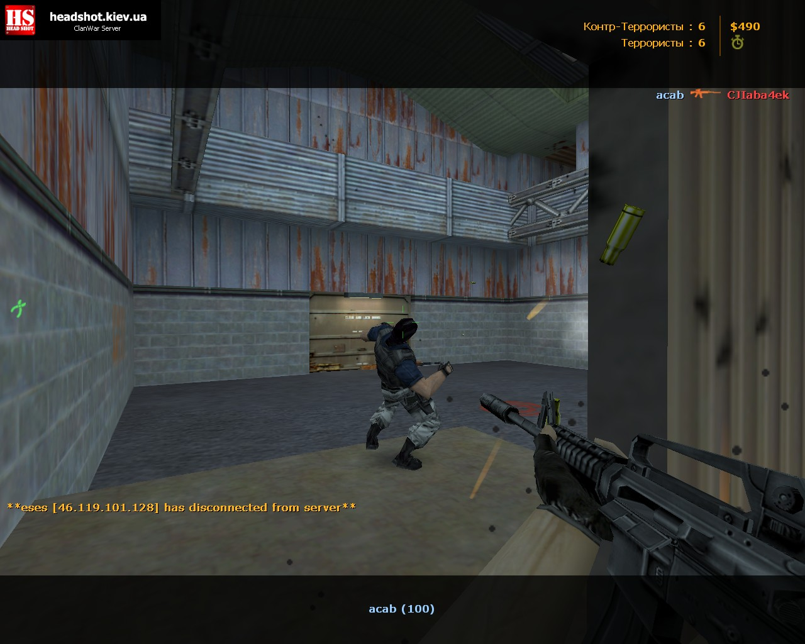
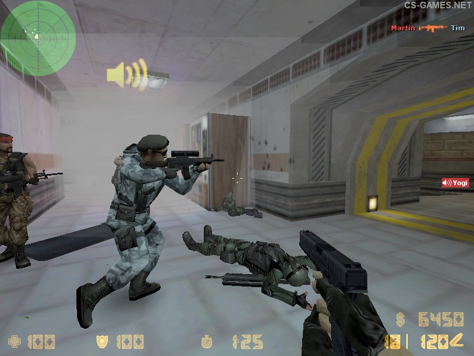
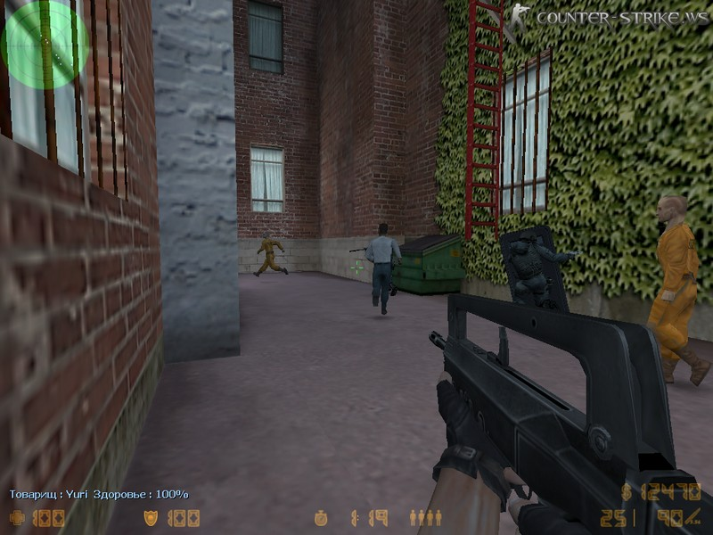
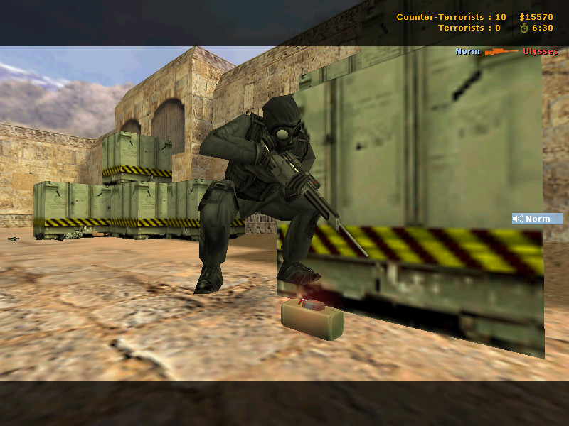

Об игре ч.1
Counter-Strike (от англ. — "Контрудар"; сокр. CS или КС) — серия компьютерных игр в жанре командного шутера от первого лица, основанная на движке GoldSrc, изначально появившаяся как модификация игры Half-Life. Всего в основной серии вышло пять версий игры, самая популярная из которых — Counter-Strike 1.6. Существуют и отдельные части, например Counter-Strike: Condition Zero (мультиплеер с одиночными заданиями) и Condition Zero: Deleted Scenes (сюжетная игра), основанные на движке GoldSource, а также Counter-Strike: Source, основанная на более современном движке Source. 14 августа 2011 года Valve официально презентовала Counter-Strike: Global Offensive, которая вышла 21 августа 2012 года.
Counter-Strike — популярная многопользовательская игра, имеющая поддержку сетевых и одиночных игр (с ботами). Некоторые аналитики считают, что в настоящее время Counter-Strike 1.6 теряет популярность по мере появления у игроков более мощных ПК, поддерживающих современные игры с более красивой графикой и усовершенствованными физическими движками. В 2007—2008 гг. наметился обратный процесс — укрепления позиций CS 1.6 как турнирной дисциплины. Множество людей по всему миру не спешат покинуть ряды виртуальных бойцов Counter-Strike. Прежде всего это связано со ставшим привычным геймплеем.

Основная идея игры — противостояние двух команд — террористов (Terrorist forces, T) и контр-террористов
(Counter-Terrorist forces, CT; в русской локализации Global Offensive — спецназ). Каждый игрок при входе
в игру выбирает команду, за которую он хочет играть, либо возможность быть наблюдателем (Spectator),
если это предусмотрено настройками игрового сервера.
Цель игры — выполнить задание карты или уничтожить противников. За выполненные задания и уничтоженных
противников игрок получает деньги, которые может потратить на покупку оружия (проигравшая команда также
получает деньги, но существенно меньше).

- 


- 


В зависимости от типа игровой карты задания могут быть следующими:
— Hostage Rescue («Спасение заложников»)
Целью игры является вывод заложников (для CT) и их удерживание (для Т) либо полное уничтожение врага. CT
выигрывают, если до окончания времени раунда успеют довести всех заложников до зоны спасения, а если
будут выведены не все — победят террористы. Заложники на радаре отображаются (для CT) голубыми точками.
При спасении заложника всем игрокам передаётся голосовое сообщение Hostage has been rescued, а при
спасении всех заложников выводится соответствующее сообщение на экран. Чтобы заставить следовать
заложника за собой, игрок CT должен нажать Use, находясь рядом с заложником (при этом слова,
произносимые заложниками, хорошо слышны на большом расстоянии). Чтобы заложник перестал следовать за CT,
игрок должен снова нажать Use. В отличие от террористов игрок CT может толкать заложников, если те
блокируют его. Плохо продумано поведение заложников — следуя за CT, они не могут приседать, открывать
двери, спрыгивая с большой высоты, не теряют hp. Если заложник отстал, к нему нужно заново подойти и
нажать Use. При нахождении в зоне спасения у игроков CT слева появляется значок «R».
Обычно названия карт этого сценария начинаются с префикса cs_. Такие появились в хронологическом порядке
первыми — в beta 1.0, самыми первыми картами были cs_siege, cs_mansion, cs_wpndepot и cs_prison.
- 


- 

— Bomb / Defuse («Заминировать/Обезвредить»)
На данный момент карты только этого сценария используются на всех крупных чемпионатах в силу большего
дисбаланса сторон на картах иных сценариев.
Задачей для команды террористов является подрыв бомбы в определённом месте, которых на сбалансированных
картах обычно два. Бомбу несёт один из игроков команды (bomber), но может её скинуть как обычное оружие.
Этот игрок отображается на радаре оранжевым цветом; будучи скинутой, сама бомба обозначается мигающей
оранжевой точкой (или с учётом высоты — двумя перпендикулярными линиями), а при закладке — мигающим
крестом (только для команды Т). У игрока, несущего бомбу, есть рюкзак на спине, а наличие бомбы
отображается слева на экране соответствующим значком. При нахождении в зоне закладки значок начинает
мигать красным цветом. В момент закладки всем игрокам обеих команд передаётся сообщение The bomb has
been planted. У CT есть возможность сократить время разминирования бомбы, купив Defusal Kit (разг.
щипцы, кусачки), с которым оно составляет 5 секунд (без него — 10 секунд). Время закладки бомбы
составляет всего 3 секунды.
Первые карты этого типа появились в beta 4.0, ими были de_nuke, de_dust, de_prodigy.